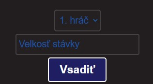
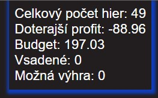

Na hracej plošine je vidieť, žlté guličky, ktoré predstavuju hráčov a modre štvorce, ktoré predstavujú platformi, po ktorých hráči budú prechádzať.
Hráči automaticky pôjdu v poradí od vrchu po spodok.
Pre to aby hráč mohol vkročiť na most stačí kliknúť na ešte neodhalenú platformu.
Hráči sa môžu pohybovať ľubovoľne sptätne na už odhalených platformách.
Ak nejaký hráč prehrá, tak ďaľší hráč nemôže prehrať, už na odhalených platformách. Po prehre hráča môžete kliknuť rovno zvýraznenú zelenú platformu aby sa hráč dostal rovno na najnovšie miesto.
Ked sa nejakému hráčovi podarí preskúmať celý most stačí mu kliknúť na poslednú zelenú platformu, kde pôjdu automaticky všetci hráči
Možnosť vsádzania
Aby hra bola záživnejšia, je pridaná aj možnosť vsádzania. Vsadíte si na daného hráča, že sa dostane na zelenú platformu.
Pre vsadenie na hráča stačí na hráča kliknúť, následne sa vám objaví kurz.
Potom zamierite do  kde sa vám automaticky načíta názov hráča, na ktorého ste klikli (jeho poradie)
vlozíte čiastku, ktorú chcete vsadiť a kliknete buttonn Vsadiť
Možnosť vsadenia na hráča je možná rovnocez zvolenie názvu hráča v spomínanom obrázku vyššie.
Ak máte dostatočný budget, tak ste úspešne stavili na to, že hráč sa dostane na zelenú platformu.
Teraz už je len potrebné postupovať podla návodu vyššie "Ako hrať?"
Po tom ako sa hra skončí vám napíše status správy výhry, ak ste na konci hry neboli v strate, v opačnom prípade prehry.
Svoj budget a celkový profit, možete jednoducho sleovať v: 
Ak by ste chceli vidieť kurzy všetkých hráčov, stači kliknúť na mierne skrytý button "Ukaž kurzy"
Hru môžete v ktoromkoľvek momente prerušit, tak, že kliknete na button "Back", ak však máte vsadené na nejakom hráčovi dostanete upozornenie a ak aj to potvrdíte prídete o všetky vsadené prostriedky.
Kurzy sa počas hry neustále menia a je možné vsadiť na, ktoréhokoľvek nevyradeného hráča v priebehu hry.
Ako hrať?
Na hracej plošine je vidieť, žlté guličky, ktoré predstavuju hráčov a modre štvorce, ktoré predstavujú platformi, po ktorých hráči budú prechádzať.
Hráči automaticky pôjdu v poradí z ľava do prava.
Pre to aby hráč mohol vkročiť na most stačí kliknúť na ešte neodhalenú platformu.
Hráči sa môžu pohybovať ľubovoľne sptätne na už odhalených platformách.
Ak nejaký hráč prehrá, tak ďaľší hráč nemôže prehrať, už na odhalených platformách. Po prehre hráča môžete kliknuť rovno zvýraznenú zelenú platformu aby sa hráč dostal rovno na najnovšie miesto.
Ked sa nejakému hráčovi podarí preskúmať celý most stačí mu kliknúť na poslednú zelenú platformu, kde pôjdu automaticky všetci hráči
Možnosť vsádzania
Aby hra bola záživnejšia, je pridaná aj možnosť vsádzania. Vsadíte si na daného hráča, že sa dostane na zelenú platformu.
Pre vsadenie na hráča stačí na hráča kliknúť, následne sa vám objaví box s kurzom.
Zadáte veľkosť stávky, ktorá nepresahuje váš budget a kliknete na tlačidlo "Vsadiť"
Ak máte dostatočný budget, tak ste úspešne stavili na to, že hráč sa dostane na zelenú platformu.
Teraz už je len potrebné postupovať podla návodu vyššie "Ako hrať?"
Po tom ako sa hra skončí vám napíše status správy výhry, ak ste na konci hry neboli v strate, v opačnom prípade prehry.
Svoj budget a celkový profit, možete jednoducho sleovať v:
Hru môžete v ktoromkoľvek momente prerušit, tak, že kliknete na button "Back", ak však máte vsadené na nejakom hráčovi dostanete upozornenie a ak aj to potvrdíte prídete o všetky vsadené prostriedky.
Kurzy sa počas hry neustále menia a je možné vsadiť na, ktoréhokoľvek nevyradeného hráča v priebehu hry.